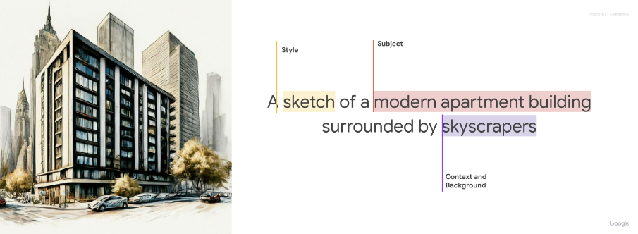
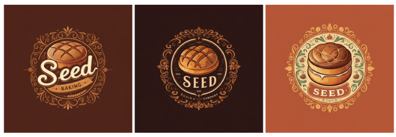
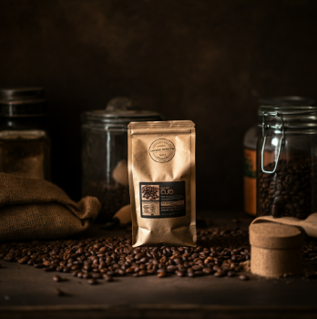
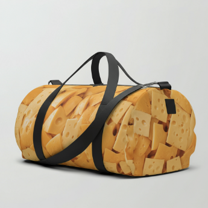
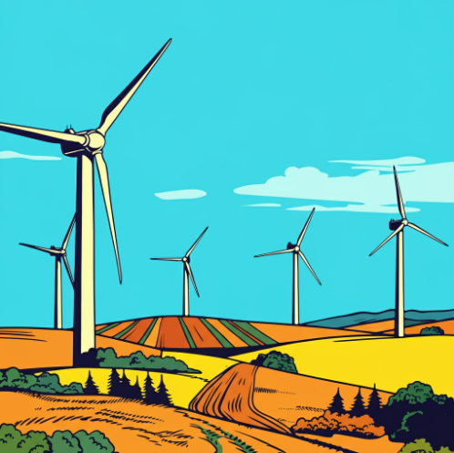

Prompt and image attribute guide¶
To use Imagen on Vertex AI, you provide a text description of what you want to generate or edit. These descriptions are called prompts, and they are the primary way you communicate with Generative AI models on Vertex AI.
This guide shows you how modifying parts of a text-to-image prompt can produce different results and provides examples of images you can create. This guide also provides guidance on how you can edit images using text prompts and iteration.
Troubleshooting
If you encounter issues with code snippets or setup, refer to the Troubleshooting Guide.
Product usage¶
To view usage standards and content restrictions associated with Imagen on Vertex AI, see the usage guidelines.
Content filtering¶
Generated images are filtered for undesirable or harmful content. Similarly, any input Imagen on Vertex AI receives is checked for offensive content. This includes the input text prompt and uploaded photos in the case of image editing. For more information, see Responsible AI and usage guidelines for Imagen.
You can also report suspected abuse of Imagen on Vertex AI or any generated output that contains inappropriate material or inaccurate information using the Report suspected abuse on Google Cloud form.
Prompt writing basics¶
While there's no single way to write a perfect prompt, most good prompts are descriptive, clear, and include a few key components. A great starting point is to think in terms of subject, context, and style.

- Subject: The object, person, animal, or scenery you want an image of.
- Context and background: The environment or setting where the subject is placed, such as a studio with a white background, an outdoor landscape, or an indoor scene.
- Style: The artistic look of the image. Styles can be general (painting, photograph, sketch) or very specific (pastel painting, charcoal drawing, isometric 3D).
After you write an initial prompt, refine it by adding more details until you get the image you want. Iteration is key. Start with a core idea, and then expand upon it until the generated image matches your vision.
| Prompt: A park in the spring next to a lake | Prompt: A park in the spring next to a lake, the sun sets across the lake, golden hour | Prompt: A park in the spring next to a lake, the sun sets across the lake, golden hour, red wildflowers |
|---|---|---|
Imagen 3 features¶
View Imagen for Generation model card
Imagen 3 includes several features to give you more control over the image generation process.
Imagen 3 can transform your ideas into detailed images, whether your prompts are short and simple or long and detailed. Refine your vision through iterative prompting, adding details until you achieve the perfect result.
| Prompt: close-up photo of a woman in her 20s, street photography, movie still, muted orange warm tones | Prompt: captivating photo of a woman in her 20s utilizing a street photography style. The image should look like a movie still with muted orange warm tones. |
|---|---|
Additional advice for Imagen 3 prompt writing:
- Use descriptive language: Employ detailed adjectives and adverbs to paint a clear picture for Imagen 3.
- Provide context: If necessary, include background information to aid the AI's understanding.
- Reference specific artists or styles: If you have a particular aesthetic in mind, referencing specific artists or art movements can be helpful.
- Use prompt engineering tools: Consider exploring prompt engineering tools or resources to help you refine your prompts and achieve optimal results.
- Enhance facial details: To improve facial details in personal and group images, specify it as a focus (e.g., use the word "portrait") and consider using a larger model like Imagen 3 instead of Imagen 3 Fast.
Imagen 3 can render text within your images. Use the following guidance to get the most out of this feature:
- Iterate with confidence: You might have to regenerate images until you achieve the look you want.
- Keep it short: Limit text to 25 characters or less for optimal generation.
- Use multiple phrases: Experiment with two or three distinct phrases. Avoid exceeding three phrases for cleaner compositions.
- Guide placement: While Imagen can attempt to position text as directed, expect occasional variations.
- Inspire font style: Specify a general font style (e.g., "bold font") to influence Imagen's choices.
- Influence font size: Specify a font size or a general indication of size (e.g., small, medium, large).
Prompt: A poster with the text "Summerland" in bold font as a title, underneath this text is the slogan "Summer never felt so good"
When using the Imagen API or Vertex AI SDK for Python, you can parameterize prompts to better control output. For example, you can create a template that allows customers to generate logos by selecting from a predefined menu of options.
You can create a parameterized prompt similar to the following:
A {logo_style} logo for a {company_area} company on a solid color background. Include the text {company_name}.
In your application, the user's choices for {logo_style}, {company_area}, and {company_name} populate the prompt that Imagen receives.
Example 1: A minimalist logo for a health care company on a solid color background. Include the text Journey.
Example 2: A modern logo for a software company on a solid color background. Include the text Silo.
Example 3: A traditional logo for a baking company on a solid color background. Include the text Seed.

Imagen 3 lets you set five distinct image aspect ratios.
Available Aspect Ratios
- Square (1:1, default): A standard square photo, common for social media posts.
-
Fullscreen (4:3): Commonly used in media, film, and older TVs. It captures more of the scene horizontally compared to 1:1.
Prompt: close up of a musician's fingers playing the piano, black and white film, vintage (4:3 aspect ratio) Prompt: A professional studio photo of french fries for a high end restaurant, in the style of a food magazine (4:3 aspect ratio) -
Portrait full screen (3:4): The fullscreen aspect ratio rotated 90 degrees. It captures more of the scene vertically.
Prompt: a woman hiking, close of her boots reflected in a puddle, large mountains in the background, in the style of an advertisement, dramatic angles (3:4 aspect ratio) Prompt: aerial shot of a river flowing up a mystical valley (3:4 aspect ratio) -
Widescreen (16:9): The most common aspect ratio for modern TVs, monitors, and landscape mobile phone screens. Use this to capture more of the background, such as scenic landscapes.
Prompt: a man wearing all white clothing sitting on the beach, close up, golden hour lighting (16:9 aspect ratio)
-
Portrait (9:16): Widescreen rotated 90 degrees, popularized by short-form video apps. Use this for tall subjects like buildings, trees, or waterfalls.
Prompt: a digital render of a massive skyscraper, modern, grand, epic with a beautiful sunset in the background (9:16 aspect ratio)
You can provide a negative prompt along with your main prompt to specify what elements to omit from an image.
- Recommended: Plainly describe what you don't want (e.g.,
greenery, plants, forest, trees). - Not recommended: Avoid instructive language like "no" or "don't" (e.g.,
no trees).
| Prompt (no negative prompt): 4K video game concept art, urban jungle, cyberpunk city, detailed rendering | Prompt: 4K video game concept art, urban jungle, cyberpunk city, detailed rendering Negative prompt: greenery, plants, forest, trees |
|---|---|
| Prompt (no negative prompt): Illustration of a mythical wyvern flying over mountains | Prompt: Illustration of a mythical wyvern flying over mountains Negative prompt: snow, frost |
| :--- | :--- |
Prompting techniques and modifiers¶
Use the following examples to create more specific prompts by adding attributes for style, materials, and quality.
To generate a photograph, start your prompt with keywords like "A photo of...". You can then add modifiers to control the camera, lighting, and film type.
Camera Proximity
Keywords: Close up, taken from far away
| Prompt: A close-up photo of coffee beans |  Prompt: A zoomed out photo of a small bag of coffee beans in a messy kitchen |
|---|---|
Camera Position
Keywords: aerial, from below
| Prompt: aerial photo of urban city with skyscrapers | Prompt: A photo of a forest canopy with blue skies from below |
|---|---|
Lighting
Keywords: natural, dramatic, warm, cold
| Prompt: studio photo of a modern arm chair, natural lighting | Prompt: studio photo of a modern arm chair, dramatic lighting |
|---|---|
Camera Settings
Keywords: motion blur, soft focus, bokeh, portrait
| Prompt: photo of a city with skyscrapers from the inside of a car with motion blur | Prompt: soft focus photograph of a bridge in an urban city at night |
|---|---|
Lens Types
Keywords: 35mm, 50mm, fisheye, wide angle, macro
| Prompt: photo of a leaf, macro lens | Prompt: street photography, new york city, fisheye lens |
|---|---|
Film Types
Keywords: black and white, polaroid
| Prompt: a polaroid portrait of a dog wearing sunglasses | Prompt: black and white photo of a dog wearing sunglasses |
|---|---|
To generate illustrations or art, specify the style or creation technique in your prompt. Art styles can range from monochrome sketches to hyper-realistic digital art.
The following images use the same base prompt with different styles: "An [art style or creation technique] of an angular sporty electric sedan with skyscrapers in the background"
| Prompt: A technical pencil drawing of an angular... | Prompt: A charcoal drawing of an angular... | Prompt: A color pencil drawing of an angular... |
|---|---|---|
| Prompt: A pastel painting of an angular... | Prompt: A digital art of an angular... | Prompt: An art deco (poster) of an angular... |
| :--- | :--- | :--- |
You can create imagery that is otherwise difficult or impossible by specifying unusual shapes and materials.
Keywords: "...made of...", "...in the shape of..."
 Prompt: a duffle bag made of cheese |
Prompt: neon tubes in the shape of a bird | Prompt: an armchair made of paper, studio photo, origami style |
|---|---|---|
Referencing historical art periods or movements can produce iconic styles.
Keywords: "...in the style of..."
The following images use the base prompt: "generate an image in the style of [art period or movement]: a wind farm"
| Prompt: generate an image in the style of an impressionist painting: a wind farm | Prompt: generate an image in the style of a renaissance painting: a wind farm |  Prompt: generate an image in the style of pop art: a wind farm |
|---|---|---|
Certain keywords can signal to the model that you are looking for a high-quality asset.
- General Modifiers: high-quality, beautiful, stylized
- Photos: 4K, HDR, Studio Photo
- Art, Illustration: by a professional, detailed
| Prompt (no quality modifiers): a photo of a corn stalk | Prompt (with quality modifiers): 4k HDR beautiful photo of a corn stalk taken by a professional photographer |
|---|---|
Advanced guide: Creating photorealistic images¶
To generate more photorealistic output, use specific keywords related to photography techniques, lens types, and focal lengths. The following table provides guidance for different subjects.
| Use case | Lens type | Focal lengths | Additional details |
|---|---|---|---|
| People (portraits) | Prime, zoom | 24-35mm | black and white film, Film noir, Depth of field, duotone (mention two colors) |
| Food, insects, plants (objects, still life) | Macro | 60-105mm | High detail, precise focusing, controlled lighting |
| Sports, wildlife (motion) | Telephoto zoom | 100-400mm | Fast shutter speed, Action or movement tracking |
| Astronomical, landscape (wide-angle) | Wide-angle | 10-24mm | Long exposure times, sharp focus, long exposure, smooth water or clouds |
Portraits¶
Prompt: A woman, 35mm portrait, blue and grey duotones
Model: Imagen 3 (imagen-3.0-generate-002)
Prompt: A woman, 35mm portrait, film noir
Model: Imagen 3 (imagen-3.0-generate-002)
Objects¶
Prompt: leaf of a prayer plant, macro lens, 60mm
Model: Imagen 3 (imagen-3.0-generate-002)
Prompt: a plate of pasta, 100mm Macro lens
Model: Imagen 3 (imagen-3.0-generate-002)
Motion¶
Prompt: a winning touchdown, fast shutter speed, movement tracking
Model: Imagen 3 (imagen-3.0-generate-002)
Prompt: A deer running in the forest, fast shutter speed, movement tracking
Model: Imagen 3 (imagen-3.0-generate-002)
Wide-angle¶
Prompt: an expansive mountain range, landscape wide angle 10mm
Model: Imagen 3 (imagen-3.0-generate-002)
Prompt: a photo of the moon, astro photography, wide angle 10mm
Model: Imagen 3 (imagen-3.0-generate-002)
What's next¶
Read articles about Imagen and other Generative AI on Vertex AI products: